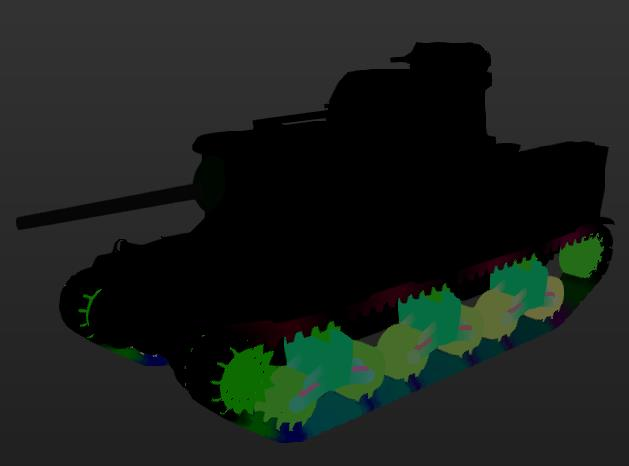

Vertex Colors and what they are.
Tank Exporter can display the Vertex Colors of vertices IF they exist.
The Gun and Chassis components have vertex colors.
These colors control what part of a tank bends, rotates or moves.
The RGB channel color combinations define different parts of the gun and chassis.
Each wheels vertices are a differect color from the others.
